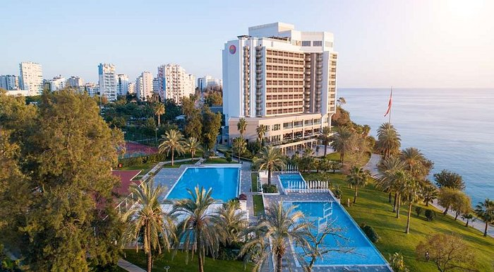
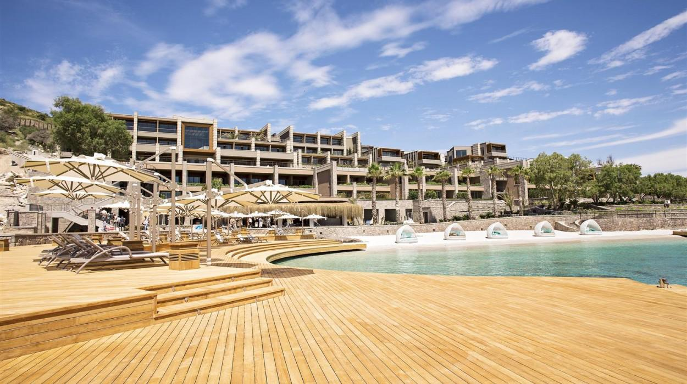

Akra Hotel
Цей сучасний готель із виходом до пляжу й краєвидами на Середземне море розташовано за 6 км від водоспаду Дюден і за 7 км від Музею Анталії та Брами Адріана. Стильні сучасні номери мають балкони з краєвидами на море чи місто, безкоштовний доступ до Wi-Fi, телевізори з пласкими екранами, а також кавомашини та мінібари. У всіх покращених номерах стандарт і люкс є зони відпочинку, а в деяких – гідромасажні ванни. Сніданок за системою шведського столу подають в елітній обідній зоні з краєвидами на море.
Caresse
Курортний спа-готель Caresse a Luxury Collection, Bodrum зі спа-центром і сауною розташований у місті Бітез в Егейському регіоні. Гостям готелю пропонують сезонний відкритий басейн і приватний пляж, а також бар. До послуг гостей безкоштовний Wi-Fi та приватна парковка. Усі номери оснащені телевізором із плоским екраном, облаштовані власною ванною кімнатою з ванною та душем, халатами, капцями та безкоштовними туалетно-косметичними засобами.
D Maris Bay

Нещодавно збудований готель D Maris Bay розташований у спокійній бухті в оточенні соснового лісу та гір. До послуг гостей відкритий і критий басейни, спа-центр і 5 відзначених Блакитним прапором готельних пляжів на береговій лінії півострова Датча. Розкішні номери готелю D Maris Bay оформлені в сучасному стилі й оснащені кондиціонером та LED-телевізором. Бездротовий доступ до Інтернету (Wi-Fi) надається безкоштовно. З балконів номерів відкривається панорамний вид на Егейське море.
Crowne Plaza Antalya, an IHG Hotel

Розкішний 5-зірковий готель Crowne Plaza Antalya з панорамним видом на Середземне море розташований на знаменитому пляжі Коньяалти. У цьому готелі, який було модернізовано в 2020 році, є критий і відкритий басейни, великий спа-центр і безкоштовний Wi-Fi.